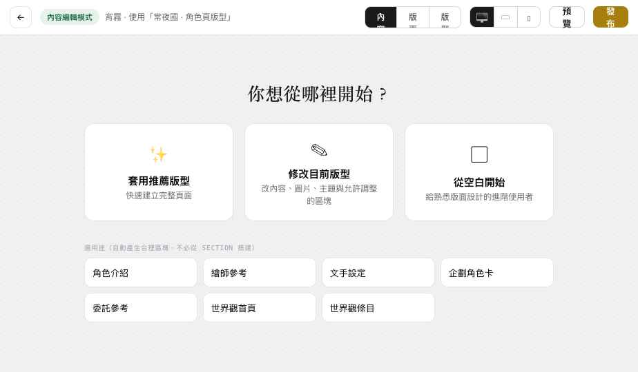

重整 Builder 的資訊架構與操作層級，讓一般 OC 使用者清楚知道自己在改內容、調版面還是設計版型——不動 PB0／PB0.1 的資料與發布架構。
Top Bar 明確顯示模式徽章＋情境（例：內容編輯模式 · 宵霧 · 使用「常夜國角色頁」版型），可一鍵切換。列表入口文案分成編輯內容／自訂版面，主持人另有設計企劃版型（無權限者不顯示）。

新增：常用區塊（角色主視覺／角色介紹／基本資料／企劃身份／色票／圖片牆／關係摘要／世界觀條目／委託按鈕，皆智慧 Block 加入即綁定）→ 基礎內容 → 版面配置（單欄區段／左右雙欄／圖文並排／卡片群組／圖片網格／滿版主視覺，人類名稱）→ 進階版面（Section/Stack/Grid/Spacer，預設摺疊、內容模式不顯示）。圖層：人類可讀樹＋鎖定/失效/缺資料標記。資料：已驗證人類分組 角色本體／目前企劃版本／圖片與素材／關聯內容，工程識別收進 hover「進階資訊」；可拖入 Canvas 或前往補資料。
一般模式 Inspector＝內容｜外觀｜手機版（已驗證，無「權限」分頁）；版型設計模式才加權限。內容：使用資料／自訂文字、資料來源卡（可「編輯角色原始資料 →」導到 Character Editor）、資料缺少時隱藏或替代。外觀：先選 Variant（簡約/古典/怪談/終端機…），「跟隨主題」開，關閉才展開完整 Override（含對比警告）。「智慧區塊＝資料如何呈現」與「資料來源＝顯示什麼」在 UI 分清楚。
未選取不顯示操作框/把手；Hover 淡色 outline；選取才顯示 Toolbar；鎖定在 Canvas 只留一個小鎖頭、詳情在圖層與 Inspector 頂端。智慧 Block 內明確分「編輯顯示方式」與「編輯角色原始資料」——在 Builder 改外觀不會動到 Character.name，要改名得按鈕跳 Character Editor。
每個任務都不需理解 raw path、templateNodeKey 或 Entity ID。
手機＝內容編輯（改文字/圖、切主題、顯隱區塊、簡單上下移、預覽、發布）；Section/Grid/Responsive/鎖定提示「複雜版面設計建議使用平板或桌機」，不縮三欄。檔案：assets/pagebuilder.css（模式徽章/起始畫面/人類分類/Inspector/降噪）、pages/public-pages.html（模式分流、新手引導、人類 IA、簡化 Inspector、降噪 Canvas、5 任務）；資料與 Renderer 不動。
| 智慧區塊的拖入排序、換圖、Variant 套用為 Demo toast（不寫回）。 |
| 「跟隨主題」關閉後的 Override 欄位為示意，未即時套用到 Canvas。 |
| Builder 仍為 position:fixed 全螢幕覆蓋（正式走 /app/public-pages/:pageId/edit 獨立 Route）。 |
| 世界觀版型「套用於 N 個條目」的影響範圍計數與批次套用 UI 為示意。 |
PB0.2 完成，先停。等你驗收，再回 Participants／Permissions。
維持單一 OCData、Demo interaction only。